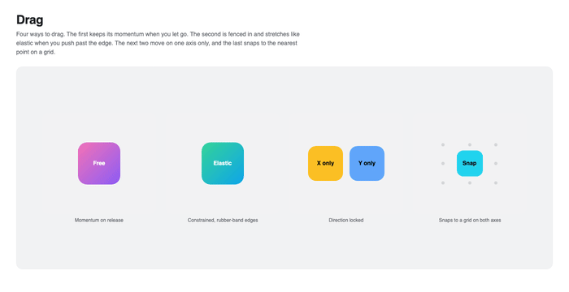
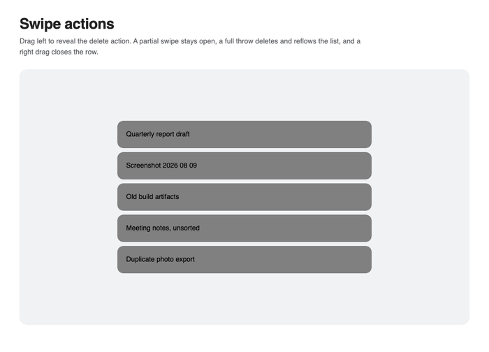
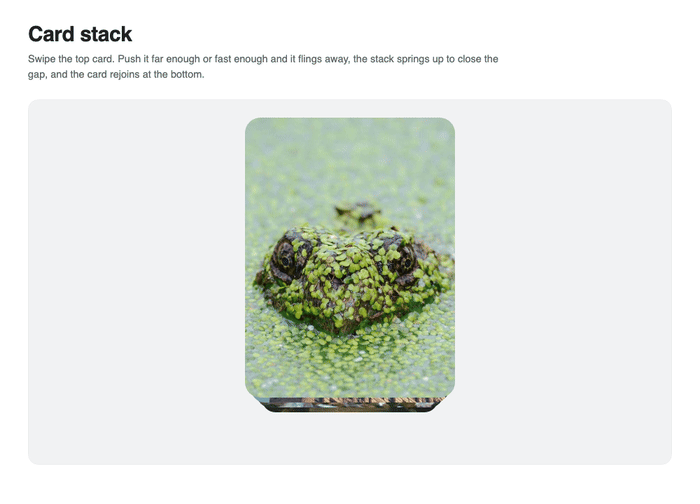
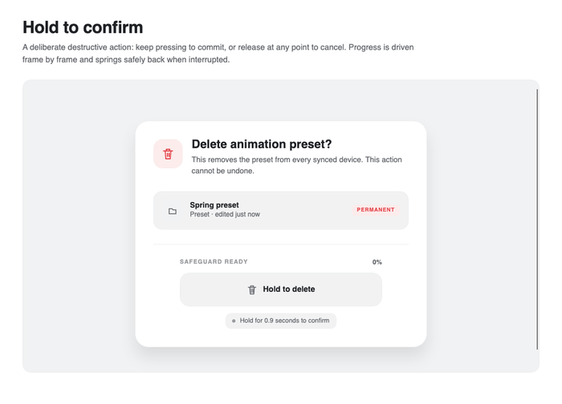

Interactions
Attached properties add motion without replacing a control template or its native input behaviour.
Hover, press, focus, and drag states
<Border nova:Motion.WhileHover="scale:1.05; y:-8"
nova:Motion.WhilePress="scale:0.96"
nova:Motion.WhileFocus="scale:1.02; y:-4"
nova:Motion.WhileDrag="scale:1.08; rotate:3" />
Each state returns to the channel value that was active before the interaction. If a channel already has a destination, that destination is used as the stable resting value.
Dragging
Enable dragging on one or both axes and configure constraints, elastic overscroll, release momentum, and snap points:
<Border Width="72" Height="72"
nova:Motion.Drag="Both"
nova:Motion.DragConstraints="-120,-80,120,80"
nova:Motion.DragSnapX="-120,0,120"
nova:Motion.DragElastic="0.35"
nova:Motion.DragMomentum="True"
nova:Motion.WhileDrag="scale:1.08; rotate:3" />

Swipe selection
Motion.Swipe adds horizontal or vertical pointer swipe selection to Carousel and other SelectingItemsControl implementations:
<Carousel nova:Motion.Swipe="Horizontal" ItemsSource="{Binding Photos}" />
For custom gestures, combine Avalonia pointer capture with Motion.Jump while tracking and a spring when the pointer is released. Swipe actions can reveal a command, settle at a threshold, or animate the row away before removing it.

The same direct-tracking pattern can carry pointer velocity into a fling. This card stack either dismisses the front card or springs it back, then animates the remaining cards into place.

Continuous press progress
Time-based interactions such as hold-to-confirm can subscribe to Motion.OnEveryFrame, update a channel with Motion.Jump, and dispose the subscription on release, completion, or unload. Keep the destructive action separate from its visual progress so it fires only after the threshold is reached.

In-view animation
Motion.InView describes the state from which a control enters. InViewThreshold is the visible fraction required to trigger it, and InViewOnce controls whether it can replay.
<Border nova:Motion.InView="opacity:0; y:32"
nova:Motion.InViewThreshold="0.25"
nova:Motion.InViewOnce="True" />
Variants
Variants keep named visual states in XAML and can stagger descendants when an ancestor state changes.
<StackPanel nova:Motion.State="{Binding MenuState}"
nova:Motion.VariantStagger="0.05"
nova:Motion.StaggerFrom="Last">
<Border nova:Motion.Variants="closed: opacity:0; y:-14 | open: opacity:1; y:0" />
<Border nova:Motion.Variants="closed: opacity:0; y:-14 | open: opacity:1; y:0" />
</StackPanel>
StaggerFrom applies to both variant and enter staggers. Use First, Last, or Center without adding delays to individual descendants.
Loops and popups
Motion.Loop, LoopDuration, LoopMode, and LoopDelay run a compact state while a control remains attached and effectively visible. Hidden loops stop and restore their baseline until they become visible again. For popups, use PopupEnter, PopupExit, and PopupStagger; Nova delays the close until the exit animation finishes. Use Motion.TogglePopup(popup) for a toggle button, Motion.OpenPopup(popup) for imperative reopening, or bind Motion.PopupOpen when the requested state comes from a view model. Unlike binding Popup.IsOpen directly, PopupOpen remains false during the exit handshake and can therefore observe a later true value.
<Popup nova:Motion.PopupOpen="{Binding IsMenuOpen, Mode=TwoWay}"
nova:Motion.PopupEnter="opacity:0; y:-8"
nova:Motion.PopupExit="opacity:0; y:-4" />